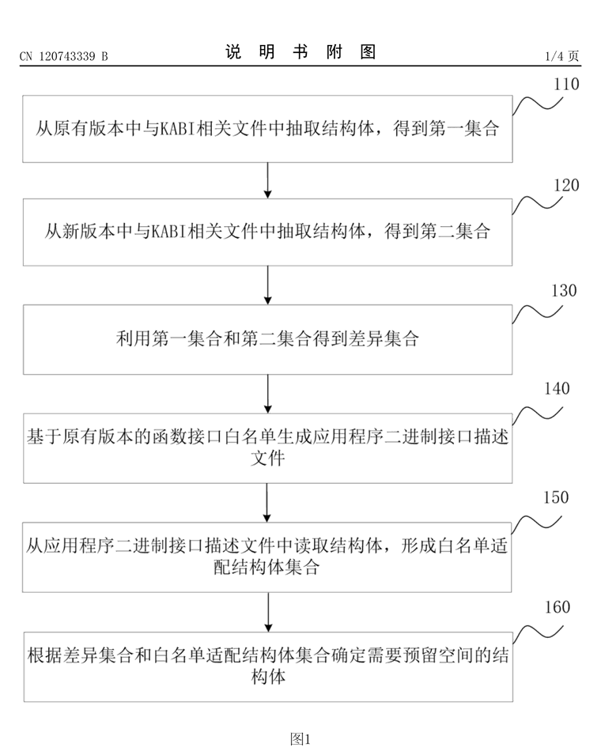
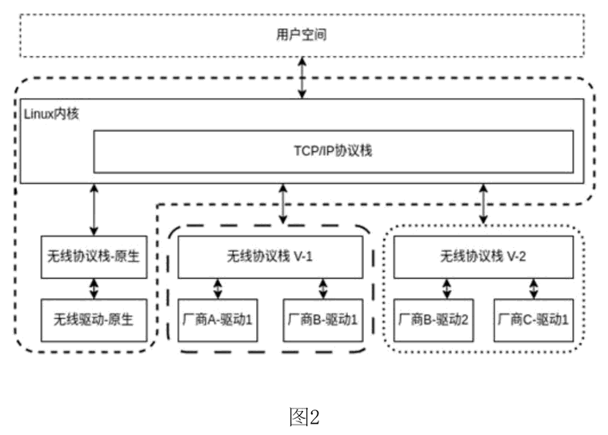
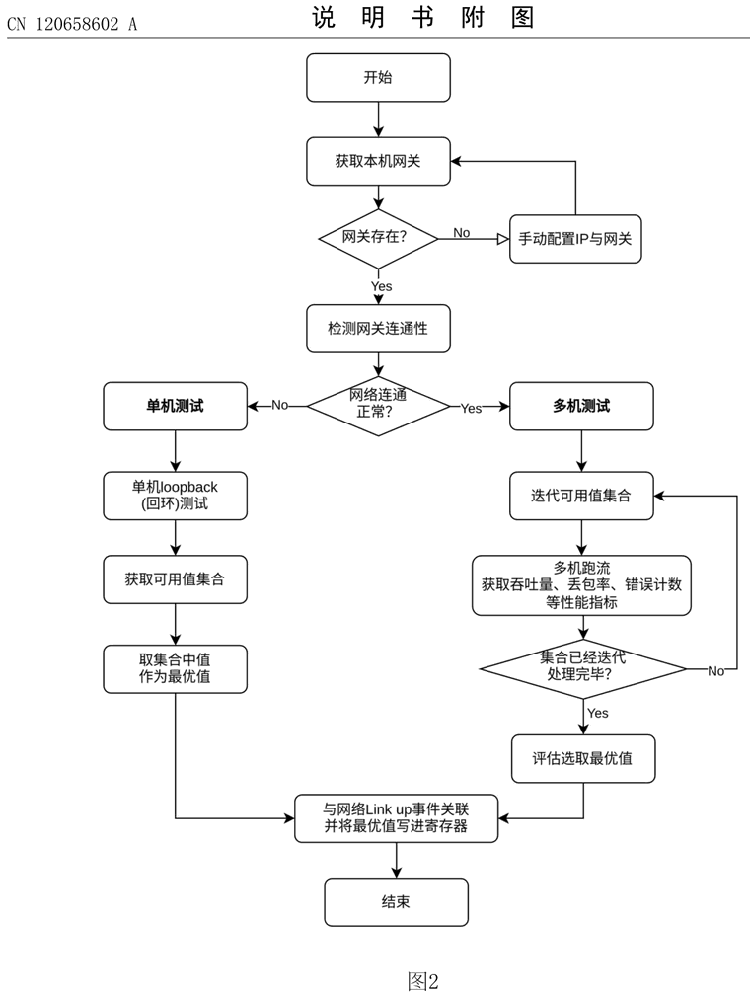

本人作为第一发明人的发明专利，均可在国家知识产权局专利公布公告网按公开/授权号查询。附图均摘自专利公开文本。
// 点击公开号或专利名，跳转查看该专利详情
| 公开 / 授权号 | 专利名 | 状态 |
|---|---|---|
| CN120743339B | 预留结构体的确定方法、装置、终端及介质 | 已授权（2025-12-12） |
| CN122679229A | 内核多版本无线协议栈共存部署方法、装置、终端及介质 | 已公开 |
| CN120658602A | 一种操作系统升级后的网络性能调优方法及系统 | 已公开 |
预留结构体的确定方法、装置、终端及介质
一次 6.6 内核 wifi 协议栈升级梳理中遇到的问题：KABI 白名单里的接口与数据结构变动需要逐个排查——哪些结构体"名称未变、属性已变"、多层嵌套结构体里哪些底层成员受影响，过去全靠人工比对新旧内核头文件，费时费力还容易漏判；一旦漏掉，旧驱动模块在新内核上轻则加载失败，重则写脏结构体引发内核崩溃。
利用抽象语法树（AST）自动抽取新旧版本 KABI 相关文件中的全部结构体（嵌套结构体展开到底层成员），比对得到差异集合；再基于函数接口白名单生成 ABI 描述文件，两个集合取交集，自动输出需要预留空间的结构体清单。
排查从"人工逐个比对"变为"自动化输出清单"，效率与准确性双提升；方法已用于公司内核维护分支的协议栈升级检测（结构体空间预留结果已合入）。专利于 2025-12-12 获国家知识产权局授权。

内核多版本无线协议栈共存部署方法、装置、终端及介质
银河麒麟 V10 SP1（5.4 内核）需要支持 WiFi 7 等新网卡，但新驱动依赖 6.6 内核的 cfg80211/mac80211 新版协议栈，已发行版本跑不起来；整体升级无线子系统工作量巨大、难以全量回归测试，让网卡厂商在旧协议栈上自行适配又存在功能盲区、积极性也不高。
按目标驱动拉取匹配版本的内核源码，分离出 cfg80211/mac80211 组件；给全部导出符号附加厂商 + 内核版本前缀（如 kylin_v6_6_ieee80211_find_sta），并生成"#define 原符号 → 新符号"的兼容头文件——多套协议栈在同一内核中符号完全隔离、并行共存，原生协议栈不受影响。
基于该方法完成无线子系统 backport 移植：5.4 内核成功运行 6.6 协议栈，WiFi 5 / WiFi 7 网卡实测网络功能正常，新旧系统驱动同源；配套 dkms 包通过 45 个内核小版本（5.4.18-101 ~ 168）的编译兼容检测。方案固化为专利，2026-09-01 公开。

一种操作系统升级后的网络性能调优方法及系统
前场多起存量设备故障：系统升级后有线网卡无法获取 IP 地址（RGMII 时延默认值失配）、开机/重启后概率性断网、睡眠唤醒后只收不发——根源都是升级后的 MAC/PHY 驱动与出厂 BIOS 调好的 PHY↔MAC 收发时延参数失配；找整机厂商重刷 BIOS 或系统厂商定制流程繁琐，旧设备甚至无人维护。
在网卡芯片允许的时延值区间内逐值实测：联网状态下做多机连通性测试，用吞吐量 / 丢包率 / 错误计数评分选取最优值；未联网时用 PHY 单机回环测试筛出可用值取中值；最终把最优时延写入寄存器并与链路连接（link up）事件绑定，开机自动生效——纯软件完成调优。
不依赖示波器等外部测试工具即可完成升级后网络异常的恢复与性能调优，减少 BIOS 厂商与操作系统厂商的适配工作量；方法正是从上述真实前场案例的调试复盘中提炼，专利 2025-09-16 公开。
